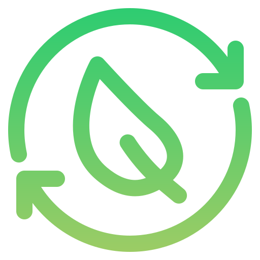

Botella
img/p, dato/p y dato/img/p2. También las 71 fotos de Kaggle diptosen/bottle-detection-dataset: bottles_closeups y bottles_occluded. Ese dataset no trae una carpeta de “no botella”.

ReciclAppentrenamientoCuaderno
Esta página explica los archivos que fabrican la red. La foto de la app no sale del dispositivo. Aquí solo se dice de dónde salen model.json y los dos .bin.
img/p, dato/p y dato/img/p2. También las 71 fotos de Kaggle diptosen/bottle-detection-dataset: bottles_closeups y bottles_occluded. Ese dataset no trae una carpeta de “no botella”.
img/n, dato/n y dato/img/n2. El script iguala la cantidad de fondos a la de botellas, con semilla 7, para que una clase no aplaste a la otra.
video_feed/bottles.mp4. Sirve para ver las cajas del cascade en el cuaderno de clasificador. No se usa para fabricar los .bin.
Foto en gris, 100×100, valores entre 0 y 1. El mismo gris que OpenCV saca con COLOR_BGR2GRAY.
Conv 32, Conv 64 y Conv 128. Cada una es 3×3 con ReLU y después un MaxPool de 2×2. Al final el mapa queda en 10×10×128.
Flatten (12800), Dense de 100 con ReLU y Dense de 1 con sigmoide. 0,50 o menos es no botella. Por encima es botella.
Primero COCO-SSD deja pasar solo la clase bottle, con al menos 0,50. Si los .bin están, la red propia mira el recorte y tiene que pasar de 0,50. Si la confianza baja del 60 %, el resultado se marca como poco seguro.
Con TensorFlow instalado y las carpetas de fotos en su sitio:
py -3 -u entrenamiento/exportar_bins.py
El script entrena 12 épocas, lotes de 16, y guarda otra vez group1-shard1of2.bin y group1-shard2of2.bin dentro de web/modelo_botellas/. Si no salen exactamente dos archivos, se detiene. No hay que renombrar model.json.